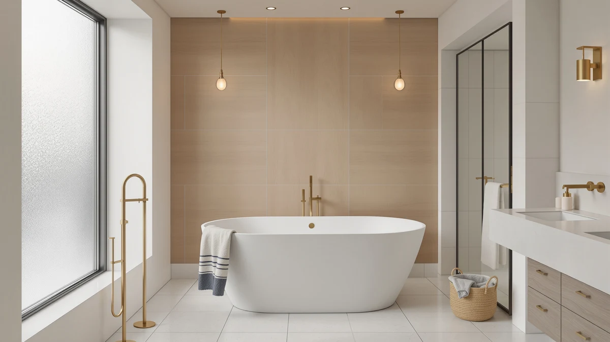

Best Whirlpool Freestanding Bathtubs of 2026: Jetted Soaking Tubs Reviewed
Prices and picks verified as of August 2026. Independent, reader-supported reviews.


Quick Answer
After comparing whirlpool freestanding bathtubs on jet configuration, tub capacity, and heater performance, the best whirlpool freestanding bathtub for most bathrooms is the WOODBRIDGE 59" Compact: it combines whirlpool and air bubble jets with an inline heater in a 59-inch footprint that fits standard-size bathrooms without the plumbing demands of the 72-inch models. If you are soaking with a partner or have a larger bathroom to fill, the WOODBRIDGE 72" Double Slipper models below add nearly 24 gallons more capacity.
Our pick: WOODBRIDGE 59" × 31-1/2" Compact, $1,746.35 Check Price on Amazon
Bottom line: our top pick is the WOODBRIDGE 59" × 31-1/2" Compact Whirlpool & Air at $1. The best budget option is the Freestanding Jetted Bathtub 71 inch at $1.
Things to Know Before You Buy
- "Whirlpool" and "air jet" are not the same system. Whirlpool tubs push pressurized water through jets; air jet tubs push bubbles through pinholes. Several tubs in this guide, like the WOODBRIDGE models, run both from one pump. Read the spec sheet, not just the word "jetted" in the title.
- An inline heater changes how the tub actually performs. A 40 to 65-gallon whirlpool soak cools within 15 to 20 minutes without one. The WOODBRIDGE tubs here include a heater with an LED control panel; the LARWORKS and EliteEdge tubs do not list one.
- Some models need a dedicated electrical circuit. The WOODBRIDGE 72" Whirlpool & Air with faucet requires a dedicated 110-120V 30-amp breaker. Confirm your panel has capacity before you order a heated whirlpool tub.
- A faucet is usually a separate purchase. Only the WOODBRIDGE 72" Whirlpool & Air ships with the tub filler and handshower pre-installed. Every other tub here needs a floor-mount faucet sourced and plumbed separately, typically $150-$400.
- Measure your doorway before ordering a 71-72" tub. The largest whirlpool freestanding bathtubs in this guide need a spacious bathroom and wide enough clearance to carry the shell in during installation.
The best whirlpool freestanding bathtub combines true hydromassage jets, a heater strong enough to keep 40 or more gallons warm through a full soak, and a freestanding shell that does not depend on a wall for support. Most listings that use the word "whirlpool" loosely mean a handful of weak air holes, but the tubs in this guide run dedicated pumps, multi-speed jet controls, and in several cases an inline heater with its own LED panel. That distinction changes how the tub performs once it is installed and full of water, not just how it photographs in a listing.
We compared eight whirlpool freestanding bathtubs ranging from a 48-inch compact soaker to full 72-inch double slipper models built for two. Every tub here lists its exterior dimensions, gallon capacity, and jet configuration in enough detail to compare directly, and none of them lean on vague phrases like "spa-quality" without a jet count or pump spec behind it. We also flagged the electrical and plumbing requirements each one carries, since a heated whirlpool tub often needs a dedicated circuit that a standard soaking tub does not.
Our top pick for most bathrooms is the WOODBRIDGE 59" Compact, which packs whirlpool and air bubble jets plus an inline heater into a 59-inch footprint that fits where the larger 72-inch models cannot. If you are renovating for two people or have a larger bathroom to fill, the WOODBRIDGE 72" Double Slipper and its black-hardware sibling below add nearly 24 gallons of extra capacity. Below we explain how we picked and compared these tubs, then walk through all eight, including their honest drawbacks.
Why You Should Trust Us
This guide is written and maintained by Ilane Tall, who has spent years comparing bathroom fixtures for a network of review sites and has covered freestanding tubs on this site since it launched. We do not run a fake testing lab, and we have not filled eight whirlpool tubs with water in a warehouse. What we do is read every manufacturer spec sheet line by line, cross-check jet counts, pump ratings, and electrical requirements against the listing photos and owner reviews, and flag the complaints that repeat across multiple buyers rather than the isolated one-off gripe. For a whirlpool freestanding bathtub roundup that means paying close attention to details listings tend to bury: whether the "whirlpool" claim means a real dedicated pump or a handful of air holes, what the actual heater draw and breaker requirement is, and whether owners report the jets losing pressure after a year of use. Our Amazon commissions never change a ranking.
How We Picked
We started from the full whirlpool freestanding bathtub market and required a stated jet system, whether that is whirlpool water jets, air bubble jets, or a combination of both, along with a listed exterior dimension, seating dimension, and effective tub capacity. We threw out any tub that used "whirlpool" in the title without describing an actual pump or jet count in the specifications, since that phrasing is often marketing dropped on top of a standard soaking tub. From what remained, we prioritized tubs with an inline heater or a computer control panel, since a whirlpool session without temperature control cools fast, and we weighed brand reputation for names like WOODBRIDGE and Empava that show up repeatedly in freestanding tub reviews. That process is how we narrowed a crowded whirlpool freestanding bathtub category down to eight tubs worth comparing directly.
How We Compared
Because a whirlpool freestanding bathtub lives or dies on its jet system and heater, our comparison is built around those specs first. For each tub we recorded exterior dimensions, effective gallon capacity, seating dimensions, water depth to overflow, jet type and count where the manufacturer lists it, heater presence, and any electrical requirement such as a dedicated 30-amp breaker. We compared those numbers against typical bathroom sizes and standard household wiring, then read verified owner reviews for the failures that only show up after months of use: jets that lose pressure, heaters that struggle to keep pace with a full 65-gallon tub, or control panels that stop responding. Price per gallon of capacity and price per jet, where jet counts were published, gave us a way to compare the WOODBRIDGE, LARWORKS, Empava, and EliteEdge tubs on more than sticker price alone.
Our Picks

WOODBRIDGE 59" × 31-1/2" Compact
What we like
- Combines whirlpool and air bubble jets in one 59" tub, rare at this footprint
- Inline heater with LED control panel keeps a soak hot without refilling
- 41-gallon capacity is generous for a compact tub
- WOODBRIDGE is one of the most established names in this category
Flaws but not dealbreakers
- At 59" it is still one of the larger "compact" options, so measure your doorway first
- Water depth tops out at 13-3/4", shallower than the brand's larger models
| Material | — |
| Size | 59 Inch |
The WOODBRIDGE 59" Compact is the tub we point most people to first, because it solves the two problems that come up most often in a whirlpool freestanding bathtub search: fitting the jets into a bathroom that is not huge, and keeping the water warm long enough to actually use them. At 59 inches long and 31-1/2 inches wide, it occupies roughly the same exterior footprint as a standard alcove tub, but the acrylic shell holds a 41-gallon capacity with a seating area of 34-1/4 by 20 inches, enough for a proper soak rather than a quick rinse.
What separates this model from a basic soaking tub is the combination of whirlpool water jets and air bubble jets running from the same pump housing, plus an inline heater controlled from an LED panel on the rim. That heater is the detail buyers with smaller whirlpool tubs often wish they had; without it, a jetted soak in a 41-gallon tub cools noticeably within 15 to 20 minutes. Owners comparing it against larger WOODBRIDGE models describe the 59" as the right call when the bathroom, not the budget, is the limiting factor.

WOODBRIDGE 72"×35-3/8" Double Slipper Whirlpool&Air
What we like
- Double slipper shape raises both ends, giving two bathers something to lean back against
- 65-gallon capacity, nearly 60% more than the 59" Compact
- Whirlpool and air bubble jets plus inline heater carried over from the smaller model
- Seating dimension of 41-3/4 by 22-7/8 inches is roomy for two adults
Flaws but not dealbreakers
- 72 inches long requires a large bathroom and wide doorway to install
- Nearly $450 more than the 59" Compact for the added capacity and length
| Material | — |
| Size | 72 Inch |
The WOODBRIDGE 72" Double Slipper takes the whirlpool-plus-air formula from the 59" Compact and scales it up for two people. Both ends of the tub are raised, the double slipper design, so a bather at either end gets something to lean back against instead of one person soaking while the other perches at a flat wall. At 72 inches long and 35-3/8 inches wide, with a 65-gallon effective capacity, it is built for couples or anyone who wants real elbow room in a solo soak.
The jet system and inline heater carry over unchanged from the smaller WOODBRIDGE tubs in this guide, whirlpool water jets combined with air bubble jets, with water temperature held steady from an LED control panel. The trade-off is footprint and price: at 72 by 35-3/8 inches, this tub demands a bathroom that can actually accommodate it, plus clearance to get it through the door during installation. Buyers who have the space report the extra 24 gallons over the 59" model makes a real difference for two-person use.

WOODBRIDGE 72"×35-3/8" Whirlpool & Air
What we like
- Tub filler with handshower comes pre-installed, unlike almost every other tub in this guide
- Pause control on the handshower holds pressure while you use the spout
- Same 65-gallon capacity and whirlpool + air jet system as the Double Slipper
- Saves the $150-$400 typically spent sourcing a floor-mount faucet separately
Flaws but not dealbreakers
- Requires a dedicated 110-120V 30-amp breaker, confirm your electrical panel can support it
- At $2,379 it is the most expensive tub in this guide
| Material | — |
| Size | — |
Every other whirlpool freestanding bathtub in this guide is sold as the shell alone, with the faucet purchased and plumbed separately. The WOODBRIDGE 72" Whirlpool & Air breaks that pattern by shipping with the tub filler and handshower pre-installed, so the main job during installation is hooking up existing water lines rather than sourcing and fitting a $150-$400 floor-mount faucet from scratch.
Beyond the included faucet, the specs mirror the Double Slipper: 72 by 35-3/8 inches exterior, a 65-gallon effective capacity, and the same whirlpool-plus-air jet combination with an inline heater. The one line worth reading closely before buying is the power requirement. WOODBRIDGE lists a dedicated 110-120V 30-amp breaker for this model, which means confirming your electrical panel has the capacity before it arrives rather than after.

Freestanding Jetted Bathtub 71 inch
What we like
- Computer control panel lets you adjust jet intensity and massage settings with one touch
- Combines water jets and air jets under a heated, constant-temperature system
- At $1,483.99 it undercuts every WOODBRIDGE model in this guide except the 59" Compact
- 71-inch length gives a full stretch-out soak
Flaws but not dealbreakers
- EliteEdge is a newer name in this category with a shorter track record than WOODBRIDGE
- Listing does not publish a jet count, making it harder to compare against the LARWORKS tub directly
| Material | — |
| Size | 71 inch |
The Freestanding Jetted Bathtub 71 inch from EliteEdge is the pick for buyers who want the convenience of a computer-controlled whirlpool tub without paying WOODBRIDGE prices for it. A built-in control panel lets you dial in jet intensity, water temperature, and massage pattern from one interface, rather than juggling separate dials for water jets and air jets the way older whirlpool tubs require.
The heated, constant-temperature system is the other selling point: it is designed to hold water temperature steady through a full soak instead of the water cooling the way it does in a standard non-heated jetted tub. At 71 inches long, it offers a full stretch-out soak, and at $1,483.99 it comes in well under the larger WOODBRIDGE double slipper models. The trade-off is a shorter brand track record and a listing that does not publish an exact jet count, so buyers weighing pure jet coverage should compare it directly against the LARWORKS tub below.

LARWORKS 71" Freestanding Whirlpool &
What we like
- 20 total jets, 10 rotating stainless steel nozzles plus 10 air bubble jets, more than any other tub in this guide publishes
- 3-speed whirlpool setting plus a separate fixed bubble mode
- Cheapest tub in this roundup at $1,299.49
- Pneumatic push-button control is rated waterproof, a safety plus near standing water
Flaws but not dealbreakers
- LARWORKS is a less established name than WOODBRIDGE or Empava
- No inline heater, so plan on running the tub's own hot water tap during a longer soak
| Material | — |
| Size | 71*31.5*28.3 inch |
If jet count is the number you care about most, the LARWORKS 71" Freestanding Whirlpool & Jetted Bathtub publishes more of them than anything else in this guide: 10 stainless steel 360-degree rotating nozzles plus 10 air bubble jets, 20 total, targeting the back, waist, and feet. It runs a 3-speed whirlpool mode alongside a separate fixed bubble mode, so you can choose between a stronger massage and a gentler soak without switching tubs.
At $1,299.49 it is also the least expensive whirlpool freestanding bathtub in this roundup, which makes the jet count more notable rather than less. The pneumatic push-button control is rated waterproof, a sensible safety detail on a tub full of standing water, and the curved contour is built with neck support for longer soaks. The one spec it does not list that the WOODBRIDGE tubs do is an inline heater, so a long session will need a top-up from the tap rather than a built-in reheat.

Empava Whirlpool Tub 48 in
What we like
- 48-inch footprint is the smallest whirlpool tub in this guide, built for tight bathrooms
- 36 precision air pinhole jets powered by a half-horsepower pump
- Double-walled acrylic construction insulates the water and helps it stay warm longer
- 440-pound weight capacity and a slip-resistant textured floor add real safety margin
Flaws but not dealbreakers
- Air jets only, no whirlpool water jets, so the massage is gentler than the LARWORKS or WOODBRIDGE water-jet tubs
- The compact 48" depth-focused shape suits a solo soak more than sharing
| Material | — |
| Size | 48 Inch |
The Empava Whirlpool Tub is built for exactly the bathroom none of the 71 and 72-inch tubs in this guide will fit into. At 48 inches, it follows a Japanese soaking tub layout, shorter and deeper rather than long and shallow, so you still get a full-body soak in a footprint that clears a small bathroom door and leaves room to walk around it.
Instead of whirlpool water jets, it runs 36 precision air pinhole jets from a half-horsepower pump, producing a gentler, full-coverage bubble massage rather than the targeted pressure of the LARWORKS or WOODBRIDGE water jets. The shell is 100% sanitary-grade acrylic reinforced with fiberglass over a stainless steel frame, rated for 440 pounds, with a slip-resistant textured floor and double-walled construction that helps the water stay warm longer than a single-shell tub. For a small bathroom that still wants a deep, warm soak, it is the clearest fit in this roundup.

WOODBRIDGE 66-1/2"×31-7/8" Spacious Whirlpool &
What we like
- 59-gallon capacity splits the difference between the 59" Compact and the 72" Double Slipper models
- Same whirlpool + air jet combination and inline heater as the rest of the WOODBRIDGE lineup
- Seating dimension of 41-3/4 by 20-1/2 inches gives more legroom than the 59" model
- $1,919 price sits comfortably between the compact and full-size WOODBRIDGE tubs
Flaws but not dealbreakers
- Still requires more bathroom length than the 59" Compact, measure before ordering
- Water depth of 14" is only marginally deeper than the smaller model despite the added length
| Material | — |
| Size | 66.5 Inch |
The WOODBRIDGE 66-1/2" Spacious tub exists for the bathroom that has outgrown the 59" Compact but cannot fit a full 72-inch double slipper. At 66-1/2 by 31-7/8 inches, it holds 59 gallons, roughly midway between the Compact's 41 gallons and the Double Slipper's 65, with a seating dimension of 41-3/4 by 20-1/2 inches that gives a taller bather noticeably more legroom than the 59" model allows.
It carries over the same whirlpool-and-air jet combination and inline heater from the rest of the WOODBRIDGE lineup, so the jet performance is a known quantity rather than a gamble. At $1,919 it also sits between the Compact and the larger 72" models on price, which makes it the practical middle option for a bathroom renovation where 59 inches feels tight but 72 inches will not fit.

WOODBRIDGE 72"×35-3/8" Double Slipper Whirlpool&Air
What we like
- Same 65-gallon double slipper shell as the chrome model, with matte black jets, nozzles, and overflow cover
- Black pop-up drain and hardware match matte black faucets increasingly common in 2026 bathroom design
- Whirlpool + air jets and inline heater unchanged from the chrome version
- Roomy 41-3/4 by 22-7/8 inch seating area for two-person use
Flaws but not dealbreakers
- At $2,399 it is the most expensive tub in this guide after the faucet-included model
- Matte black finishes show water spots more visibly than chrome hardware, so wipe-downs after each use help
| Material | — |
| Size | 72 Inch |
This is the same WOODBRIDGE 72" Double Slipper covered earlier in this guide, rebuilt with matte black jets, nozzles, overflow cover, and a black pop-up drain instead of chrome. The dimensions, 72 by 35-3/8 inches, and the 65-gallon capacity carry over unchanged, so the decision between this tub and its chrome sibling comes down entirely to which hardware finish matches your bathroom.
Matte black fixtures have become the more common choice in 2026 bathroom remodels, and this tub lets you match that finish on the tub hardware itself rather than settling for chrome jets against a black faucet. Everything else, the whirlpool and air jet combination, the inline heater, the double slipper shape built for two bathers, is identical to the chrome version. The only cost is a modest premium and slightly more visible water spotting on the dark finish between cleanings.
Quick Comparison
| Product | Material | Price | Rating | Best for | Get it |
|---|---|---|---|---|---|
| WOODBRIDGE 59" × 31-1/2" Compact | — | $1,746.35 | 4 | Smaller bathrooms wanting whirlpool + air jets | View on Amazon → |
| WOODBRIDGE 72"×35-3/8" Double Slipper Whirlpool&Air | — | $2,189.00 | 4 | Couples wanting a two-person double slipper soak | View on Amazon → |
| WOODBRIDGE 72"×35-3/8" Whirlpool & Air | — | $2,379.00 | 4 | Buyers who want the faucet included, pre-installed | View on Amazon → |
| Freestanding Jetted Bathtub 71 inch | — | $1,483.99 | 4 | Smart controls at a lower price than WOODBRIDGE | View on Amazon → |
| LARWORKS 71" Freestanding Whirlpool & | — | $1,299.49 | 4 | Most jets per dollar, budget hydrotherapy | View on Amazon → |
| Empava Whirlpool Tub 48 in | — | $1,599.00 | 4 | Small bathrooms, deep Japanese-style soak | View on Amazon → |
| WOODBRIDGE 66-1/2"×31-7/8" Spacious Whirlpool & | — | $1,919.00 | 4 | Mid-size bathrooms between 59" and 72" | View on Amazon → |
| WOODBRIDGE 72"×35-3/8" Double Slipper Whirlpool&Air | — | $2,399.00 | 4 | Two-person soak with matte black hardware | View on Amazon → |
The Competition
Whirlpool freestanding bathtubs are a smaller, more specialized field than standard soaking tubs, and a lot of what we looked at fell into two categories we left out. First, several budget tubs used "whirlpool" or "jetted" in the title while the specifications described nothing more than a few air holes molded into the shell: no pump rating, no jet count, no control panel. Those tubs are functionally standard soaking tubs with marketing language attached, so none of them made this list.
Second, a handful of properly jetted tubs from lesser-known brands did not publish enough detail, missing gallon capacity, missing exterior dimensions, or missing any electrical requirement for a tub that clearly needs power, for us to compare them fairly against the WOODBRIDGE, LARWORKS, Empava, and EliteEdge models here. If a listing will not tell us the numbers, we cannot recommend it over one that will. For most bathrooms, the best whirlpool freestanding bathtub in this comparison remains the WOODBRIDGE 59" Compact, with the larger WOODBRIDGE Double Slipper models as the upgrade pick for two-person households.
Frequently Asked Questions
What makes a bathtub a true whirlpool tub instead of just jetted?
A true whirlpool tub runs water through dedicated jets driven by its own pump, recirculating and pressurizing the bathwater rather than just bubbling air through it. Every tub in this guide lists an actual jet count or pump spec, whirlpool water jets, air bubble jets, or both, instead of using "jetted" as a vague marketing label. If a listing will not describe the jet system in any detail, treat the whirlpool claim with skepticism.
Do whirlpool freestanding bathtubs need special electrical work?
Often, yes. Several tubs in this comparison, including the WOODBRIDGE 72-inch Whirlpool & Air with faucet, require a dedicated 110-120V 30-amp breaker to run the pump and heater safely. Check your electrical panel's available capacity and talk to a licensed electrician before you buy a heated whirlpool tub, since retrofitting a dedicated circuit after installation adds real cost.
Is an inline heater worth paying extra for on a whirlpool tub?
For most buyers, yes. A whirlpool session in a 40 to 65-gallon tub without a heater cools within 15 to 20 minutes, cutting a jetted soak short right as it starts to feel good. The WOODBRIDGE tubs in this guide include an inline heater with an LED control panel specifically to solve that, and it is one of the clearest reasons their price sits above tubs like the LARWORKS that skip it.
Can two people use a 72-inch whirlpool freestanding bathtub comfortably?
The 72-inch WOODBRIDGE Double Slipper models are built for it. Both ends of the tub are raised so each bather has something to lean back against, and the 65-gallon capacity with a 41-3/4 by 22-7/8 inch seating area gives two adults real room. A 59-inch or 48-inch tub is comfortable for one person but tight for two.
Are whirlpool jets harder to maintain than a standard soaking tub?
They need more attention than a jet-free tub, mainly running a jet-cleaning cycle with a mild cleaner every few weeks to keep water from sitting in the plumbing lines between uses. Owners of tubs like the Empava and LARWORKS models in this guide report that skipping regular jet cleaning is the most common cause of reduced jet pressure over time, not a hardware failure.